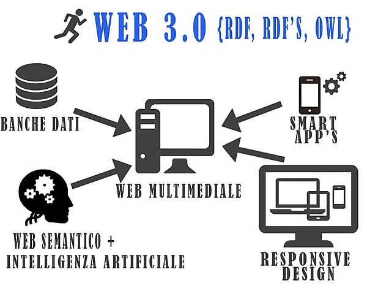

Línea del Tiempo Evolución de la Web
Web 1.0
La Web 1.0, también conocida como la "Web estática", se refiere a la primera versión de la World Wide Web que se desarrolló desde finales de la década de 1980 hasta principios de la década de 2000. Durante este período, la mayoría de los sitios web eran simples páginas HTML que ofrecían información estática en formato de texto y gráficos.
Los sitios web eran predominantemente unidireccionales, lo que significa que los usuarios solo podían consumir contenido, pero no podían interactuar con él. El contenido era estático y no se actualizaba con frecuencia, y la mayoría de los sitios web tenían un diseño simple y básico.
Web 2.0
La Web 2.0 es una evolución de la Web 1.0 que se produjo a partir de la segunda mitad de la década de 2000. La Web 2.0 se caracteriza por una mayor interactividad y colaboración entre los usuarios, lo que permite una experiencia de usuario más rica y personalizada.
El término "Web 2.0" fue acuñado en 2004 por Tim O'Reilly, fundador de O'Reilly Media, para describir la nueva generación de aplicaciones web que estaban surgiendo en ese momento.
Entre las características clave de la Web 2.0 se encuentran las redes sociales, como Facebook y Twitter, que permiten a los usuarios conectarse y compartir contenido con amigos y seguidores. También hay plataformas de creación y colaboración de contenido, como Wikipedia, YouTube y Flickr.
Web 3.0

La Web 3.0 es una visión del futuro de la World Wide Web, por lo que no hay una fecha específica en la que se haya "creado" la Web 3.0. A diferencia de la Web 1.0 y la Web 2.0, que se refieren a versiones anteriores de la web que ya han pasado, la Web 3.0 es un término que se utiliza para describir una evolución futura de la web.
La Web 3.0 es una evolución futura de la World Wide Web que se espera que tenga la capacidad de entender el significado de la información y proporcionar experiencias más personalizadas e inteligentes a los usuarios.
A diferencia de la Web 1.0 y la Web 2.0, que se centraron en la creación de contenido y la interacción social en línea, respectivamente, la Web 3.0 se centrará en la inteligencia artificial, el aprendizaje automático y la comprensión semántica. Esto significa que la Web 3.0 tendrá la capacidad de comprender mejor el significado de los datos y proporcionar información más relevante y precisa a los usuarios.
Web 4.0

Actualmente, no existe una versión oficial de la Web 4.0, y no hay un consenso claro sobre qué características o tecnologías definirán una posible versión futura de la web. El término "Web 4.0" se ha utilizado de manera especulativa y en sentido figurado en algunas discusiones sobre el futuro de la web, pero no hay una versión oficial o ampliamente aceptada de la misma.
El término "Web 4.0" se ha utilizado de manera especulativa en algunas discusiones sobre el futuro de la web, pero actualmente no existe una definición clara o ampliamente aceptada de lo que sería la Web 4.0.
Algunos expertos han sugerido que la Web 4.0 podría estar relacionada con la convergencia de tecnologías emergentes, como la inteligencia artificial, la robótica, la realidad aumentada y virtual, y la Internet de las cosas, para crear una "red inteligente" en la que la tecnología es más autónoma y autogestionada.
Otras visiones de la Web 4.0 incluyen la posibilidad de una mayor personalización y adaptación a las preferencias y necesidades de los usuarios, así como un mayor enfoque en la privacidad y la seguridad de los datos. Sin embargo, estas son solo especulaciones y aún no existe una definición clara de lo que sería la Web 4.0.
Regresar al inicio